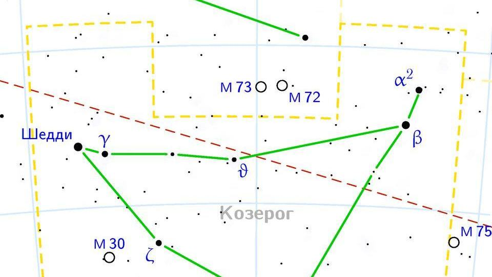

Oğlak burcu özellikleri: tarihleri, elementi ve uyumu

Görsel: Capricornus constellation map ru lite · Wikimedia Commons katkıcısı · CC BY-SA 3.0 · Wikimedia Commons
Oğlak, kuzey yarımkürede kış gündönümüyle başlayan tropik zodyak burcudur. Bu sayfada tarihlerin yanında, yarı keçi yarı balık sembolünün nereden geldiği ve Oğlak Dönencesi'nin adını neden koruduğu da anlatılıyor.
Oğlak burcu hangi tarihlerde, elementi ve gezegeni ne?
Geleneksel tropik zodyakta Oğlak 22 Aralık – 19 Ocak arasına düşer. Burç, kış gündönümüyle açıldığı için tarih gündönümünün o yılki saatine göre bir gün kayabilir. 21-22 Aralık'ta doğanlar için kesin yanıt doğum saatiyle birlikte hesaplanır.
Oğlak'ın elementi toprak, niteliği öncüdür; öncü burçlar mevsimlerin açılışında yer alır. Yönetici gezegen Satürn'dür ve geleneksel yorumda sınır, zaman ve sorumluluk temalarıyla anılır. Sembol, yarısı keçi yarısı balık olan deniz keçisidir.
Oğlak takımyıldızı gökyüzünde nerede, sembolü nereden geliyor?
Oğlak takımyıldızı güney gökyüzünde, yaklaşık 20 saat 06 dakika ile 21 saat 59 dakika sağ açıklık arasında uzanır; dik açıklığı eksi 8 ile eksi 28 derece arasındadır. Alan olarak orta büyüklükte olsa da sönüktür: üçüncü kadirden parlak neredeyse hiç yıldızı yoktur, bu yüzden şehirden seçmek zordur.
En parlak yıldızı Deneb Algedi'dir; Arapça adı keçinin kuyruğu anlamına gelir. Bölge Babil yıldız kataloglarında SUHUR.MAŞ, yani keçi-balık adıyla geçer ve tanrı Ea ile ilişkilendirilir. Bu kayıtlar MÖ 1000'den öncesine uzandığı için melez figür Yunan mitolojisinden çok daha eskidir.
Yunan anlatısında figür, canavar Typhon'dan kaçmak için gövdesinin alt yarısını balığa çeviren Pan ile eşleştirilir; kimi kaynak Zeus'u besleyen keçi Amaltheia'yı anar. Aralık gündönümü presesyon nedeniyle yaklaşık MÖ 130'dan beri Yay takımyıldızındadır, ama Güneş'in en güney noktasına hâlâ Oğlak Dönencesi denir.
Oğlak burcuna astrolojide hangi özellikler atfedilir?
Astrolojide Oğlak'a sabır, sorumluluk duygusu ve uzun vadeli hedef kurma atfedilir. Geleneksel yorumda bu burcun insanları erken olgunlaşan, ciddiye alınmayı önemseyen, sonuca yavaş ama düzenli ilerleyen kişiler olarak anlatılır. Bunlar burca atfedilen tanımlardır, ölçülmüş özellikler değil.
Zorlanılan yanlar olarak katılık, işi bırakamama ve duyguyu erteleme geçer. Aynı yorumda, yükü paylaşmak yerine tek başına taşımanın yorgunluk yarattığı söylenir. Bu da bir anlatı geleneğidir; kimsenin davranışını önceden belirlemez.
İş hayatında Oğlak ile ilişkilendirilen alanlar yönetim, finans, mühendislik, mimarlık, kamu ve uzun soluklu projelerdir. Satürn bağlantısı nedeniyle yapı kurma ve sürdürme gerektiren roller geleneksel yorumda bu burca yakın sayılır.
Oğlak hangi burçlarla uyumlu sayılır?
Geleneksel uyum yorumunda Oğlak; toprak grubundan Boğa ve Başak ile, su grubundan Akrep ve Balık ile rahat kabul edilir. Yengeç karşıt burcudur ve bu eksen ev ile iş, korunma ile başarma arasındaki denge üzerinden okunur.
İlişkilerde Oğlak'a yavaş yakınlaşma, söz verdiğini tutma ve süreklilik arayışı atfedilir. Doğum tarihi kolayca doğrulanabilen Oğlak örnekleri: Martin Luther King Jr. (15 Ocak 1929), Muhammad Ali (17 Ocak 1942) ve Barış Manço (2 Ocak 1943).
Son bir not: astroloji kişiliği ölçmez; bu sayfa kültürel bir merakı karşılamak ve keyifle okunmak için hazırlandı.
Takip etmek için
- Karşıt burç Yengeç'in sayfasını okuyup iki burca atfedilen eğilimleri karşılaştırın
- Kova sayfasından Satürn'ün yönettiği diğer burcu öğrenin
- Balık sayfasındaki presesyon bölümünü okuyup ekinoks noktasının kayışını takip edin
Yükselen Oğlak
Yükselen Oğlak hangi saatlerde doğar? İstanbul, Ankara ve İzmir için 12 ayın saat aralıkları: Yükselen Oğlak saat kaç. Kendi yükseleninizi doğum saatinizle yükselen burç hesaplama aracında bulabilirsiniz.
Sık sorulan sorular
Oğlak Dönencesi adını burçtan mı alıyor?
Takımyıldızdan. Aralık gündönümü eskiden Oğlak takımyıldızındaydı; presesyon nedeniyle yaklaşık MÖ 130'dan beri Yay takımyıldızında. Enlem çizgisinin adı ise değişmeden kaldığı için bugün de Oğlak Dönencesi deniyor.
22 Aralık'ta doğdum, Yay mıyım Oğlak mı?
Gündönümünün o yılki saatine bağlı. Geçiş 21 ya da 22 Aralık'a düşebildiği için sınır günlerde iki sonuç da mümkündür; kesin yanıt doğum saati kullanılarak hesaplanır.
Oğlak takımyıldızını çıplak gözle görebilir miyim?
Karanlık bir gökyüzünde, sonbahar akşamlarında güney yönünde mümkün. Yıldızları sönük olduğu için şehir ışığı altında şeklini seçmek zordur; önce parlak Altair yıldızını bulup güneye doğru inmek yardımcı olur.
Kaynaklar: Wikipedia – Capricornus, Ian Ridpath, Star Tales – Capricornus, Wikipedia – Tropic of Capricorn, Wikipedia – Barış Manço, Martin Luther King Jr., Muhammad Ali.